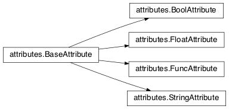
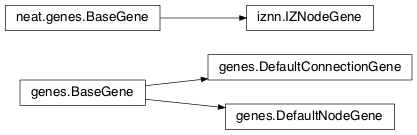
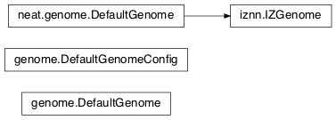
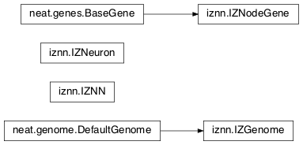
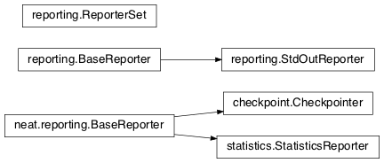

Module summaries¶
activations¶
Has the built-in activation functions, code for using them, and code for adding new user-defined ones. For the built-in activation functions, see Overview of builtin activation functions.
- exception
activations.InvalidActivationFunction(Exception)¶Exception called if an activation function being added is invalid according to the
multiparameter.MultiParameterSet.add_func()method, or if an unknown activation function is requested by name viaget.Deprecated since version 0.92-multiparam_funcs: This is now an alias for
multiparameter.BadFunctionError. Use either it, or preferably one of its two subclasses,multiparameter.InvalidFunctionError(for unusable functions; based on TypeError) ormultiparameter.UnknownFunctionError(for unknown functions requested by name; based on LookupError).
- class
activations.ActivationFunctionSet[source]¶Contains the list of current valid activation functions, including methods for adding and getting them.
add(name, function)[source]¶After validating the function, adds it to the available activation functions under the given name. Used by
DefaultGenomeConfig.add_activation.
Parameters:
- name (str) – The name by which the function is to be known in the configuration file.
- function (
function) – The function to be added.
get(name)[source]¶Returns the named function, or raises an exception if it is not a known activation function.
Parameters: name (str) – The name of the function. Returns: The function of interest Return type: functionRaises: UnknownFunctionError – If the function is not known. Changed in version 0.92-multiparam_funcs: Most functionality of
ActivationFunctionSetmoved tomultiparameter.
aggregations¶
Has the built-in aggregation functions, code for using them, and code for adding new user-defined ones.
Note
Non-enabled connections will, by all methods currently included in NEAT-Python, not be included among the numbers input to these functions, even as 0s.
aggregations.product_aggregation(x)[source]¶An adaptation of the multiplication function to take an iterable.
Parameters: x (list(float) or tuple(float) or set(float)) – The numbers to be multiplied together; takes any iterable.Returns: \(\prod(x)\) Return type: float
aggregations.sum_aggregation(x)[source]¶Probably the most commonly-used aggregation function.
Parameters: x (list(float) or tuple(float) or set(float)) – The numbers to find the sum of; takes any iterable. Returns: \(\sum(x)\) Return type: float
aggregations.max_aggregation(x)[source]¶Returns the maximum of the inputs.
Parameters: x (list(float) or tuple(float) or set(float)) – The numbers to find the greatest of; takes any iterable. Returns: \(\max(x)\) Return type: float
aggregations.min_aggregation(x)[source]¶Returns the minimum of the inputs.
Parameters: x (list(float) or tuple(float) or set(float)) – The numbers to find the least of; takes any iterable. Returns: \(\min(x)\) Return type: float
aggregations.maxabs_aggregation(x)[source]¶Returns the maximum by absolute value, which may be positive or negative. Envisioned as suitable for neural network pooling operations.
Parameters: x (list(float) or tuple(float) or set(float)) – The numbers to find the absolute-value maximum of; takes any iterable. Returns: \(x_i, i = \text{argmax}\lvert\mathbf{x}\rvert\) Return type: float New in version 0.92.
aggregations.median_aggregation(x)[source]¶Returns the
medianof the inputs.
Parameters: x (list(float) or tuple(float) or set(float)) – The numbers to find the median of; takes any iterable. Returns: The median; if there are an even number of inputs, takes the mean of the middle two. Return type: float New in version 0.92.
aggregations.mean_aggregation(x)[source]¶Returns the arithmetic mean. Potentially maintains a more stable result than
sumfor changing numbers of enabled connections, which may be good or bad depending on the circumstances; having both available to the algorithm is advised.
Parameters: x (list(float) or tuple(float) or set(float)) – The numbers to find the mean of; takes any iterable. Returns: The arithmetic mean. Return type: float New in version 0.92.
aggregations.tmean_aggregation(x)[source]¶Returns the
trimmed mean, with 25% of the values being trimmed off each end.
Parameters: x (list(float) or tuple(float) or set(float)) – The numbers to find the trimmed mean of; takes any iterable. Returns: The trimmed arithmetic mean. Return type: float New in version 0.92-multiparam_funcs.
aggregations.maxabs_mean_aggregation(x, a)[source]¶A multiparameter aggregation function; the weighted mean of the
maxabs_aggregation()andmean_aggregation(), with the weighing determined by the evolvedaparameter. If a is 1.0, then maxabs is used; if a is 0.0, then mean is used.
Parameters: Returns: The weighted mean of the maxabs and mean aggregation functions.
Return type: Raises: ValueError – If a is outside of 0.0-1.0.
New in version 0.92-multiparam_funcs.
aggregations.multiparam_tmean_aggregation(x, a)[source]¶A multiparameter aggregation function; in this case, the evolved
aterm is used for thetrimparameter oftmean.
Parameters: Returns: The trimmed mean of the data.
Return type: Raises: ValueError – If a is outside of 0.0-0.5.
New in version 0.92-multiparam_funcs.
aggregations.maxabs_tmean_aggregation(x, a)[source]¶A multiparameter aggregation function; if the evolved
aterm is 0.0 or above,maxabs_mean_aggregation()is called; if a is below 0.0, thenmultiparam_tmean_aggregation()is called, with a = abs(a/2). Recommended for ``pooling`` use by neural networks.
Parameters: Returns: The combination of the input according to the
aparameter.Return type: Raises: ValueError – If a is outside of -1.0-1.0.
New in version 0.92-multiparam_funcs.
aggregations.sum_product_aggregation(x, a)[source]¶A multiparameter aggregation function; the evolved
aterm determines the weights in the weighted mean of thesum_aggregation()andproduct_aggregation()functions. Recommended as a more flexible replacement for both sum and product.
Parameters: Returns: The combination of the input according to the
aparameter.Return type: Raises: ValueError – If a is outside of 0.0-1.0.
New in version 0.92-multiparam_funcs.
aggregations.max_median_min_aggregation(x, a)[source]¶A multiparameter aggregation function; the evolved
aterm determines the weights in the weighted mean of the max, median, and min aggregation functions. While meant primarily for CPPNs, could be of use in other circumstances.
Parameters: Returns: The combination of the input according to the
aparameter.Return type: Raises: ValueError – If a is outside of -1.0-1.0.
New in version 0.92-multiparam_funcs.
- exception
aggregations.InvalidAggregationFunction(Exception)¶Exception called if an aggregation function being added is invalid according to the
multiparameter.MultiParameterSet.add_func()method, or if an unknown aggregation function is requested by name viaget.New in version 0.92.
Deprecated since version 0.92-multiparam_funcs: This is now an alias for
multiparameter.BadFunctionError. Use either it, or preferably one of its two subclasses,multiparameter.InvalidFunctionError(for unusable functions; based on TypeError) ormultiparameter.UnknownFunctionError(for unknown functions requested by name; based on LookupError).
- class
aggregations.AggregationFunctionSet[source]¶Contains the list of current valid aggregation functions, including methods for adding and getting them.
add(name, function)[source]¶After validating the function, adds it to the available aggregation functions under the given name. Used by
DefaultGenomeConfig.add_aggregation. TODO: Check for whether the function needsreduce, or at least offer a form of this function (or extra argument for it, defaulting to false), and/or its interface ingenome, that will appropriately “wrap” the input function.
Parameters:
- name (str) – The name by which the function is to be known in the configuration file.
- function (
function) – The function to be added.New in version 0.92.
get(name)[source]¶Returns the named function, or raises an exception if it is not a known aggregation function.
Parameters: name (str) – The name of the function. Returns: The function of interest Return type: functionRaises: UnknownFunctionError – If the function is not known. New in version 0.92.
Changed in version 0.92-multiparam_funcs: Changed from
InvalidAggregationFunctiontomultiparameter.UnknownFunctionError.
__getitem__(index)[source]¶Present for compatibility with older programs that expect the aggregation functions to be in a
dict. A wrapper forget(index).
Parameters: index (str) – The name of the function.
Returns: The function of interest.
Return type: Raises:
- UnknownFunctionError – If the function is not known.
- DeprecationWarning – Always.
Changed in version 0.92: Originally a dictionary in
genome.Deprecated since version 0.92: Use
get(index)instead.Changed in version 0.92: Moved from
genomeand expanded to matchactivations(plus themaxabs,median, andmeanfunctions added).Changed in version 0.92-multiparam_funcs: Most functionality of
AggregationFunctionSetmoved tomultiparameter.
attributes¶
Deals with attributes used by genes.

- class
attributes.BaseAttribute(name, **default_dict)[source]¶Superclass for the type-specialized attribute subclasses, used by genes (such as via the
genes.BaseGeneimplementation). Updates_config_itemswith any defaults supplied, then usesconfig_item_nameto set up a listing of the names of configuration items usingsetattr.
Parameters: Changed in version 0.92: Default_dict capability added.
config_item_name(config_item_base_name)[source]¶Formats a configuration item’s name by combining the attribute’s name with the base item name.
Parameters: config_item_base_name (str) – The base name of the configuration item, to be combined with the attribute’s name. Returns: The configuration item’s full name. Return type: str Changed in version 0.92: Originally (as
config_item_names) did not take any input and returned a list based on the_config_itemssubclass attribute.
get_config_params()[source]¶Uses
config_item_namefor each configuration item to get the name, then gets the appropriate type ofconfig.ConfigParameterinstance for each (with any appropriate defaults being set from_config_items, including as modified byBaseAttribute) and returns it.
Returns: A list of ConfigParameterinstances.Return type: list(instance) Changed in version 0.92: Was originally specific for the attribute subclass, since it did not pick up the appropriate type from the
_config_itemslist; default capability also added.
- class
attributes.FloatAttribute(BaseAttribute)[source]¶Class for numeric attributes such as the response of a node; includes code for configuration, creation, and mutation.
clamp(value, config)[source]¶Gets the minimum and maximum values desired from
config, then ensures that the value is between them.
Parameters: Returns: The value, if it is within the desired range, or the appropriate end of the range, if it is not.
Return type:
init_value(config)[source]¶Initializes the attribute’s value, using either a gaussian distribution with the configured mean and standard deviation, followed by
clampto keep the result within the desired range, or a uniform distribution, depending on the configuration setting ofinit_type.
Parameters: config (instance) – The configuration object from which the mean, standard deviation, and initialization distribution type values are to be retrieved. Returns: The new value. Return type: float Changed in version 0.92: Uniform distribution initialization option added.
mutate_value(value, config)[source]¶May replace (as if reinitializing, using
init_value), mutate (using a 0-mean gaussian distribution with a configured standard deviation frommutate_power), or leave alone the input value, depending on the configuration settings (ofreplace_rateandmutate_rate).
Parameters: Returns: Either the original value, if unchanged, or the new value.
Return type:
- class
attributes.BoolAttribute(BaseAttribute)[source]¶Class for boolean attributes such as whether a connection is enabled or not; includes code for configuration, creation, and mutation.
init_value(config)[source]¶Initializes the attribute’s value, either using a configured
default, or (if the default is “random”) with a 50/50 chance ofTrueorFalse.Deprecated since version 0.92: While it is possible to use “None” as an equivalent to “random”, this is too easily confusable with an actual
None.
Parameters: config (instance) – The configuration object from which the default parameter is to be retrieved. Returns: The new value. Return type: bool Raises: RuntimeError – If the default value is not recognized as standing for any of True,False, “random”, or “none”.
mutate_value(value, config)[source]¶With a frequency determined by the
mutate_rateandrate_to_false_addorrate_to_true_addconfiguration parameters, replaces the value with a 50/50 chance ofTrueorFalse; note that this has a 50% chance of leaving the value unchanged.
Parameters: Returns: Either the original value, if unchanged, or the new value.
Return type: Changed in version 0.92: Added the
rate_to_false_addandrate_to_true_addparameters.
- class
attributes.StringAttribute(BaseAttribute)[source]¶Class for string attributes (such as, previously, the aggregation function of a node), which are selected from a list of options; includes code for configuration, creation, and mutation.
init_value(config)[source]¶Initializes the attribute’s value, either using a configured
defaultor (if the default is “random”) with a randomly-chosen member of theoptions(each having an equal chance). Note: It is possible for the default value, if specifically configured, to not be one of the options.Deprecated since version 0.92: While it is possible to use “None” as an equivalent to “random”, this is too easily confusable with an actual
None.
Parameters: config (instance) – The configuration object from which the default and, if necessary, optionsparameters are to be retrieved.Returns: The new value. Return type: str
mutate_value(value, config)[source]¶With a frequency determined by the
mutate_rateconfiguration parameter, replaces the value with one of theoptions, with each having an equal chance; note that this can be the same value as before. (It is possible to crudely alter the chances of what is chosen by listing a given option more than once, although this is inefficient given the use of therandom.choicefunction.) TODO: Add configurable probabilities of which option is used. Longer-term, as with the improved version of RBF-NEAT, separate genes for the likelihoods of each (but always doing some change, to prevent overly-conservative evolution due to its inherent short-sightedness), allowing the genomes to control the distribution of options, will be desirable.
Parameters: Returns: The new value.
Return type:
- class
attributes.FuncAttribute(BaseAttribute)[source]¶Handle attributes that may be simple strings or may be functions needing multiparameter handling.
New in version 0.92-multiparam_funcs.
init_value(config)[source]¶Initializes the attribute’s value, either using a configured
defaultor (if the default is “random”) with a randomly-chosen member of theoptions(each having an equal chance). Note: It is possible for the default value, if specifically configured, to not be one of the options.Deprecated since version 0.92: While it is possible to use “None” as an equivalent to “random”, this is too easily confusable with an actual
None.New in version 0.92-multiparam_funcs.
param config: The configuration object from which the default and, if necessary, optionsparameters are to be retrieved.type config: instance return: The new value. rtype: str or function raises RuntimeError: If the defaultis neither an object with aninit_valueattribute nor a string.
mutate_value(value, config)[source]¶With a frequency determined by the
mutate_rateconfiguration parameter, replaces the value with one of theoptions, with each having an equal chance; note that this can be the same value as before. (It is possible to crudely alter the chances of what is chosen by listing a given option more than once, although this is inefficient given the use of therandom.choicefunction.) TODO: Add configurable probabilities of which option is used. Longer-term, as with the improved version of RBF-NEAT, separate genes for the likelihoods of each (but always doing some change, to prevent overly-conservative evolution due to its inherent short-sightedness), allowing the genomes to control the distribution of options, will be desirable.
Parameters: Returns: The new value.
Return type: Raises: RuntimeError – If the chosen option is neither an object with a
mutate_valueattribute nor a string.New in version 0.92-multiparam_funcs.
Changed in version 0.92:
__config_items__changed to_config_items, since it is not a Python internal variable.
checkpoint¶
Uses pickle to save and restore populations (and other aspects of the simulation state).
Note
The speed of this module can vary widely between python implementations (and perhaps versions).
- class
checkpoint.Checkpointer(generation_interval=100, time_interval_seconds=300, filename_prefix='neat-checkpoint-')[source]¶A reporter class that performs checkpointing, saving and restoring the simulation state (including population, randomization, and other aspects). It saves the current state every
generation_intervalgenerations ortime_interval_secondsseconds, whichever happens first. Subclassesreporting.BaseReporter. (The potential save point is at the end of a generation.) The start of the filename will be equal tofilename_prefix, followed by the generation number. If there is a need to check the last generation for which a checkpoint was saved, such as to determine which file to load, accesslast_generation_checkpoint; if -1, none have been saved.
Parameters:
start_generation(generation)[source]¶Saves the current generation number for use by
save_checkpoint().
Parameters: generation (int) – Current generation.
end_generation(config, population, species_set)[source]¶Checks to see whether
save_checkpoint()needs to be called, and if so calls it, then updates the last_generation_checkpoint and the corresponding last_time_checkpoint attributes.
Parameters:
- config (instance) – The
config.Configconfiguration instance to be used.- population (dict(int, object)) – A population as created by
reproduction.DefaultReproduction.create_new()or a compatible implementation.- species (instance) – A
species.DefaultSpeciesSet(or compatible implementation) instance.
save_checkpoint(config, population, species, generation)[source]¶Saves the current simulation state (including randomization state) to (if using the default
neat-checkpoint-forfilename_prefix)neat-checkpoint-generation, withgenerationbeing the generation number.
Parameters:
- config (instance) – The
config.Configconfiguration instance to be used.- population (dict(int, object)) – A population as created by
reproduction.DefaultReproduction.create_new()or a compatible implementation.- species (instance) – A
species.DefaultSpeciesSet(or compatible implementation) instance.- generation (int) – The generation number.
- static
restore_checkpoint(filename)[source]¶Resumes the simulation from a previous saved point. Loads the specified file, sets the randomization state, and returns a
population.Populationobject set up with the rest of the previous state.
Parameters: filename (str) – The file to be restored from. Returns: Populationinstance that can be used withPopulation.runto restart the simulation.Return type: instance
config¶
Does general configuration parsing; used by other classes for their configuration.
- class
config.ConfigParameter(name, value_type, default=None)[source]¶Does initial handling of a particular configuration parameter.
Parameters: Changed in version 0.92: Default capability added.
__repr__()[source]¶Returns a representation of the class suitable for use in code for initialization.g
Returns: Representation as for repr.Return type: str
parse(section, config_parser)[source]¶Uses the supplied configuration parser (either from the
configparser.ConfigParserclass, or - for 2.7 - the ConfigParser.SafeConfigParser class) to gather the configuration parameter from the appropriate configuration file section. Parsing varies depending on the type.
Parameters: Returns: The configuration parameter value, in stringified form unless a list.
Return type:
interpret(config_dict)[source]¶Takes a
dictionaryof configuration parameters, as output by the configuration parser called inparse(), and interprets them into the proper type, with some error-checking.
Parameters: config_dict (dict(str, str)) – Configuration parameters as output by the configuration parser.
Returns: The configuration parameter value
Return type: Raises:
- RuntimeError – If there is a problem with the configuration parameter.
- DeprecationWarning – If a default is used.
Changed in version 0.92: Default capability added.
format(value)[source]¶Depending on the type of configuration parameter, returns either a space-separated list version, for
listparameters, or the stringified version (usingstr), ofvalue.
Parameters: value (str or int or bool or float or list) – Configuration parameter value to be formatted. Returns: String version. Return type: str
config.write_pretty_params(f, config, params)[source]¶Prints configuration parameters, with justification based on the longest configuration parameter name.
Parameters:
- f (file) – File object to be written to.
- config (instance) – Configuration object from which parameter values are to be fetched (using
getattr).- params (list(instance)) – List of
ConfigParameterinstances giving the names of interest and the types of parameters.
- exception
config.UnknownConfigItemError(NameError)[source]¶Error for unknown configuration option(s) - partially to catch typos. TODO:
genome.DefaultGenomeConfigdoes not currently check for these.New in version 0.92.
- class
config.DefaultClassConfig(param_dict, param_list)[source]¶Replaces at least some boilerplate configuration code for reproduction, species_set, and stagnation classes.
Parameters:
- param_dict (dict(str, str)) – Dictionary of configuration parameters from config file.
- param_list (list(instance)) – List of
ConfigParameterinstances; used to know what parameters are of interest to the calling class.Raises: UnknownConfigItemError – If a key in
param_dictis not among the names inparam_list.
- classmethod
write_config(f, config)[source]¶Required method (inherited by calling classes). Uses
write_pretty_params()to output parameters of interest to the calling class.
Parameters: New in version 0.92.
- class
config.Config(genome_type, reproduction_type, species_set_type, stagnation_type, filename)[source]¶A simple container for user-configurable parameters of NEAT. The four parameters ending in
_typemay be the built-in ones or user-provided objects, which must make available the methodsparse_configandwrite_config, plus others depending on which object it is. (For more information on the objects, see below and Customizing Behavior.)Configitself takes care of the NEAT parameters, which are found as some of its attributes. For a description of the configuration file, see Configuration file description. The __name__ attributes of the_typeparameters are used for the titles of the configuration file sections. A Config instance’sgenome_config,species_set_config,stagnation_config, andreproduction_configattributes hold the configuration objects for the respective classes.
Parameters:
- genome_type (class) – Specifies the genome class used, such as
genome.DefaultGenomeoriznn.IZGenome. See Genome Interface for the needed interface.- reproduction_type (class) – Specifies the reproduction class used, such as
reproduction.DefaultReproduction. See Reproduction Interface for the needed interface.- species_set_type (class) – Specifies the species set class used, such as
species.DefaultSpeciesSet.- stagnation_type (class) – Specifies the stagnation class used, such as
stagnation.DefaultStagnation.- filename (str) –
Pathname for configuration file to be opened, read, processed by a parser from the
configparser.ConfigParserclass (or, for 2.7, the ConfigParser.SafeConfigParser class), theNEATsection handled byConfig, and then other sections passed to theparse_configmethods of the appropriate classes.Raises:
- AssertionError – If any of the
_typeclasses lack aparse_configmethod.- UnknownConfigItemError – If an option in the
NEATsection of the configuration file is not recognized.- DeprecationWarning – If a default is used for one of the
NEATsection options.Changed in version 0.92: Added default capabilities, UnknownConfigItemError, no_fitness_termination.
save(filename)[source]¶Opens the specified file for writing (not appending) and outputs a configuration file from the current configuration. Uses
write_pretty_params()for theNEATparameters and the appropriate classwrite_configmethods for the other sections. (A comparison of it and the input configuration file can be used to determine any default parameters of interest.)
Parameters: filename (str) – The configuration file to be written.
ctrnn¶
- class
ctrnn.CTRNNNodeEval(time_constant, activation, aggregation, bias, response, links)[source]¶Sets up the basic ctrnn (continuous-time recurrent neural network) nodes.
Parameters:
- time_constant (float) – Controls how fast the node responds; \(\tau_i\) from Continuous-time recurrent neural network implementation.
- activation (
function) – Activation function for the node.- aggregation (
function) – Aggregation function for the node.- bias (float) – Bias for the node.
- response (float) – Response multiplier for the node.
- links (list(tuple(int,float))) – List of other nodes providing input, as tuples of (input key, weight)
- class
ctrnn.CTRNN(inputs, outputs, node_evals)[source]¶Sets up the ctrnn network itself.
reset()[source]¶Resets the time and all node activations to 0 (necessary due to otherwise retaining state via recurrent connections).
set_node_value(node_key, value)[source]¶Sets the current node activation for the particular node selected.
Parameters:
get_max_time_step()[source]¶Planned to return the maximum time step that will be stable for the current network; not yet implemented.
Raises: NotImplementedError – Always.
advance(inputs, advance_time, time_step=None)[source]¶Advance the simulation by the given amount of time, assuming that inputs are constant at the given values during the simulated time.
Parameters:
- inputs (list(float)) – The values for the input nodes.
- advance_time (float) – How much time to advance the network before returning the resulting outputs.
- time_step (float or None) – How much time per step to advance the network; the default of
Nonewill currently result in an error, but it is planned to determine it automatically usingget_max_time_step().Returns: The values for the output nodes.
Return type: Raises:
- NotImplementedError – If a
time_stepis not given.- RuntimeError – If the number of
inputsdoes not match the number of input nodesChanged in version 0.92: Exception changed to more-specific RuntimeError.
- static
create(genome, config, time_constant)[source]¶Receives a genome and returns its phenotype (a
CTRNNwithCTRNNNodeEvalnodes).
Parameters:
- genome (instance) – A
genome.DefaultGenomeinstance.- config (instance) – A
config.Configinstance.- time_constant (float) – Used for the
CTRNNNodeEvalinitializations.
distributed¶
Distributed evaluation of genomes.
Note
This module is in a beta state, and still unstable even in single-machine testing. Reliability is likely to vary, including depending on the Python version and implementation (e.g., cpython vs pypy) in use and the likelihoods of timeouts (due to machine and/or network slowness). In particular, while the code can try to reconnect between between primary and secondary nodes, as noted in the
multiprocessingdocumentation this may not work due to data loss/corruption. Note also that this module is not responsible for starting the script copies on the different compute nodes, since this is very site/configuration-dependent.About compute nodes:
The primary compute node (the node which creates and mutates genomes) and the secondary compute nodes (the nodes which evaluate genomes) can execute the same script. The role of a compute node is determined using the
modeargument of the DistributedEvaluator. If the mode isMODE_AUTO, thehost_is_local()function is used to check if theaddrargument points to the localhost. If it does, the compute node starts as a primary node, and otherwise as a secondary node. IfmodeisMODE_PRIMARY, the compute node always starts as a primary node. IfmodeisMODE_SECONDARY, the compute node will always start as a secondary node.There can only be one primary node per NEAT, but any number of secondary nodes. The primary node will not evaluate any genomes, which means you will always need at least two compute nodes (one primary and at least one secondary).
You can run any number of compute nodes on the same physical machine (or VM). However, if a machine has both a primary node and one or more secondary nodes,
MODE_AUTOcannot be used for those secondary nodes -MODE_SECONDARYwill need to be specified.Usage:
- Import modules and define the evaluation logic (the
eval_genomefunction). (After this, check forif __name__ == '__main__', and put the rest of the code inside the body of the statement, or in subroutines called from it.)- Load config and create a
population- here, the variablep.- If required, create and add
reporters.- Create a
DistributedEvaluator(addr_of_primary_node, b'some_password', eval_function, mode=MODE_AUTO)- here, the variablede.- Call
de.start(exit_on_stop=True). Thestart()call will block on the secondary nodes and call sys.exit(0) when the NEAT evolution finishes. This means that the following code will only be executed on the primary node.- Start the evaluation using
p.run(de.evaluate, number_of_generations).- Stop the secondary nodes using
de.stop().- You are done. You may want to save the winning genome(s) or show some
statistics.See
examples/xor/evolve-feedforward-distributed.pyfor a complete example.Note
The below contains some (but not complete) information about private functions, classes, and similar (starting with
_); this documentation is meant to help with maintaining and improving the code, not for enabling external use, and the interface may change rapidly with no warning.
distributed.MODE_AUTO¶
distributed.MODE_PRIMARY¶
distributed.MODE_SECONDARY¶Values - which should be treated as constants - that are used for the
modeargument ofDistributedEvaluator. If MODE_AUTO,_determine_mode()useshost_is_local()and the specifiedaddrof the primary node to decide the mode; the other two specify it.
distributed._EXCEPTION_TYPE_OK¶
distributed._EXCEPTION_TYPE_UNCERTAIN¶
distributed._EXCEPTION_TYPE_BAD¶Values - which should be treated as constants - that are returned by the
_check_exception()method. The first is for a queue being empty and similar reasons to try again. The second indicates likely disconnection, but should try to reconnect. The third includes all other cases, and is responded to with either immediatelyraisingthe exception again, or returning and exiting with a non-zero exit (status) value.
- exception
distributed.ModeError(RuntimeError)[source]¶An exception raised when a mode-specific method is being called without being in the mode - either a primary-specific method called by a secondary node or a secondary-specific method called by a primary node.
distributed.host_is_local(hostname, port=22)[source]¶Returns True if the hostname points to the localhost (including shares addresses), otherwise False.
Parameters:
- hostname (str) – The hostname to be checked; will be put through
socket.getfqdn.- port (int) – The optional port for
socketfunctions requiring one. Defaults to 22, the ssh port.Returns: Whether the hostname appears to be equivalent to that of the localhost.
Return type:
distributed._determine_mode(addr, mode)[source]¶Returns the mode that should be used. If
modeisMODE_AUTO, this is determined by checking (viahost_is_local()) ifaddrpoints to the localhost; if it does, it returnsMODE_PRIMARY, else it returnsMODE_SECONDARY. If mode is either MODE_PRIMARY or MODE_SECONDARY, it returns themodeargument. Otherwise, a ValueError is raised.
Parameters:
- addr (tuple(str, int) or bytes) – Either a tuple of (hostname, port) pointing to the machine that has the primary node, or the hostname (as
bytesif on 3.X).- mode (int) – Specifies the mode to run in - must be one of
MODE_AUTO,MODE_PRIMARY, orMODE_SECONDARY.Raises: ValueError – If the mode is not one of the above.
distributed.chunked(data, chunksize)[source]¶dataand returns it as a list of chunks containing at mostchunksizeelements of data.
Parameters: Returns: A list of chunks containing (as a list) at most
chunksizeelements of data.Return type: Raises: ValueError – If
chunksizeis not 1+ or is not an integer
- class
distributed._ExtendedManager(addr, authkey, mode, start=False)[source]¶Manages the multiprocessing.managers.SyncManager instance.
Parameters:
- addr (tuple(str, int)) – Should be a tuple of (hostname, port) pointing to the machine running the DistributedEvaluator in primary mode. If mode is
MODE_AUTO, the mode is determined by checking whether the hostname points to this host or not (via_determine_mode()andhost_is_local()).- authkey (bytes) – The password used to restrict access to the manager. All DistributedEvaluators need to use the same authkey. Note that this needs to be a bytes object for Python 3.X, and should be in 2.7 for compatibility (identical in 2.7 to a
strobject). For more information, see underDistributedEvaluator.- mode (int) – Specifies the mode to run in - must be one of
MODE_AUTO,MODE_PRIMARY, orMODE_SECONDARY. Processed by_determine_mode().- start (bool) – Whether to call the
start()method after initialization.
__reduce__()[source]¶Used by
pickleto serialize instances of this class.
Returns: Information about the class instance, usable to call __init__()for the class again; a tuple of (class name, tuple(addr, authkey, mode, whether_started)).Return type: tuple(str, tuple(tuple(str, int), bytes, int, bool))
start()[source]¶Starts (if in
MODE_PRIMARY) or connects to (if inMODE_SECONDARY) the manager.
stop()[source]¶Stops the manager; if in
MODE_PRIMARY, uses shutdown.
get_inqueue()[source]¶Returns the inqueue.
Returns: The incoming queue.Return type: instance Raises: RuntimeError – If the manager has not been started.
- class
distributed.DistributedEvaluator(addr, authkey, eval_function, secondary_chunksize=1, num_workers=None, worker_timeout=60, mode=MODE_AUTO)[source]¶An evaluator working across multiple machines (compute nodes).
Warning
See Authentication Keys for more on the
authkeyparameter, used to restrict access to the manager.
Parameters:
- addr (tuple(str, int)) – Should be a tuple of (hostname, port) pointing to the machine running the DistributedEvaluator in primary mode. If mode is
MODE_AUTO, the mode is determined by checking whether the hostname points to this host or not (viahost_is_local()).- authkey (bytes) – The password used to restrict access to the manager. All DistributedEvaluators need to use the same authkey. Note that this needs to be a bytes object for Python 3.X, and should be in 2.7 for compatibility (identical in 2.7 to a
strobject).- eval_function (
function) – The eval_function should take two arguments - a genome object and a config object - and return a single float (the genome’s fitness) Note that this is not the same as how a fitness function is called byPopulation.run, nor byParallelEvaluator(although it is more similar to the latter).- secondary_chunksize (int) – The number of genomes that will be sent to a secondary node at any one time.
- num_workers (int or None) – The number of worker processes per secondary node, used for evaluating genomes. If None, will use multiprocessing.cpu_count() to determine the number of processes (see further below regarding this default). If 1 (for a secondary node), including if there is no usable result from
multiprocessing.cpu_count(), then the process creating the DistributedEvaluator instance will also do the evaluations.- worker_timeout (float or None) – specifies the timeout (in seconds) for a secondary node getting the results from a worker subprocess; if None, there is no timeout.
- mode (int) – Specifies the mode to run in - must be one of
MODE_AUTO(the default),MODE_PRIMARY, orMODE_SECONDARY.Raises: ValueError – If the mode is not one of the above.
Note
Whether the default for
num_workersis appropriate can vary depending on the evaluation function (e.g., whether cpu-bound, memory-bound, i/o-bound…), python implementation, and other factors; if unsure and maximal per-machine performance is critical, experimentation will be required.
is_primary()[source]¶Returns True if the caller is the primary node; otherwise False.
Returns: Trueif primary,Falseif secondaryReturn type: bool
is_master()[source]¶A backward-compatibility wrapper for
is_primary().
Returns: Trueif primary,Falseif secondaryReturn type: bool Raises: DeprecationWarning – Always. Deprecated since version 0.92.
start(exit_on_stop=True, secondary_wait=0, reconnect=False)[source]¶If the DistributedEvaluator is in primary mode, starts the manager process and returns. If the DistributedEvaluator is in secondary mode, it connects to the manager and waits for tasks.
Parameters:
- exit_on_stop (bool) – If a secondary node, whether to exit if (unless
reconnectisTrue) the connection is lost, the primary calls for a shutdown (viastop()), or - even ifreconnectis True - the primary calls for a forced shutdown (via callingstop()withforce_secondary_shutdownset toTrue).- secondary_wait (float) – Specifies the time (in seconds) to sleep before actually starting, if a secondary node.
- reconnect (bool) – If a secondary node, whether it should try to reconnect if the connection is lost.
Raises:
- RuntimeError – If already started.
- ValueError – If the mode is invalid.
stop(wait=1, shutdown=True, force_secondary_shutdown=False)[source]¶Stops all secondaries.
Parameters:
- wait (float) – Time (in seconds) to wait after telling the secondaries to stop.
- shutdown (bool) – Whether to shutdown the multiprocessing.managers.SyncManager also (after the wait, if any).
- force_secondary_shutdown (bool) – Causes secondaries to shutdown even if started with
reconnecttrue.Raises:
- ModeError – If not the primary node (not in
MODE_PRIMARY).- RuntimeError – If not yet
started.
evaluate(genomes, config)[source]¶Evaluates the genomes. Distributes the genomes to the secondary nodes, then gathers the fitnesses from the secondary nodes and assigns them to the genomes. Must not be called by secondary nodes. TODO: Improved handling of errors from broken connections with the secondary nodes may be needed.
Parameters: Raises: ModeError – If not the primary node (not in
MODE_PRIMARY).New in version 0.92.
genes¶
Handles node and connection genes.

- class
genes.BaseGene(key)[source]¶Handles functions shared by multiple types of genes (both node and connection), including crossover and calling mutation methods.
Parameters: key (int or tuple(int, int)) – The gene identifier. Note: For connection genes, determining whether they are homologous (for genomic distance and crossover determination) uses the (ordered) identifiers of the connected nodes.
__str__()[source]¶Converts gene attributes into a printable format.
Returns: Stringified gene instance. Return type: str
__lt__(other)[source]¶Allows sorting genes by keys.
Parameters: other (instance) – The other BaseGeneinstance.Returns: Whether the calling instance’s key is less than that of the otherinstance.Return type: bool
- classmethod
parse_config(config, param_dict)[source]¶Placeholder; parameters are entirely in gene attributes.
- classmethod
get_config_params()[source]¶Fetches configuration parameters from each gene class’
_gene_attributeslist (usingBaseAttribute.get_config_params). Used bygenome.DefaultGenomeConfigto include gene parameters in its configuration parameters.
Returns: List of configuration parameters (as config.ConfigParameterinstances) for the gene attributes.Return type: list(instance) Raises: DeprecationWarning – If the gene class uses __gene_attributes__instead of_gene_attributes
init_attributes(config)[source]¶Initializes its gene attributes using the supplied configuration object and
FloatAttribute.init_value,BoolAttribute.init_value, orStringAttribute.init_valueas appropriate.
Parameters: config (instance) – Configuration object to be used by the appropriate attributesclass.
mutate(config)[source]¶Mutates (possibly) its gene attributes using the supplied configuration object and
FloatAttribute.init_value,BoolAttribute.init_value, orStringAttribute.init_valueas appropriate.
Parameters: config (instance) – Configuration object to be used by the appropriate attributesclass.
copy()[source]¶Makes a copy of itself, including its subclass, key, and all gene attributes.
Returns: A copied gene Return type: instance
crossover(gene2)[source]¶Creates a new gene via crossover - randomly inheriting attributes from its parents. The two genes must be homologous, having the same key/id.
Parameters: gene2 (instance) – The other gene. Returns: A new gene, with the same key/id, with other attributes being copied randomly (50/50 chance) from each parent gene. Return type: instance
- class
genes.DefaultNodeGene(BaseGene)[source]¶Groups
attributesspecific to node genes - such as bias - and calculates genetic distances between two homologous (not disjoint or excess) node genes.
distance(other, config)[source]¶Determines the degree of differences between node genes using their 4 attributes; the final result is multiplied by the configured compatibility_weight_coefficient.
Parameters: Returns: The contribution of this pair to the genomic distance between the source genomes.
Return type:
- class
genes.DefaultConnectionGene(BaseGene)[source]¶Groups
attributesspecific to connection genes - such as weight - and calculates genetic distances between two homologous (not disjoint or excess) connection genes.
distance(other, config)[source]¶Determines the degree of differences between connection genes using their 2 attributes; the final result is multiplied by the configured compatibility_weight_coefficient.
Parameters: Returns: The contribution of this pair to the genomic distance between the source genomes.
Return type: Changed in version 0.92:
__gene_attributes__changed to_gene_attributes, since it is not a Python internal variable. Updates also made due to addition of default capabilities toattributes.
genome¶
Handles genomes (individuals in the population).

- class
genome.DefaultGenomeConfig(params)[source]¶Does the configuration for the DefaultGenome class. Has the
listallowed_connectivity, which defines the available values for initial_connection. Includes parameters taken from the configured gene classes, such asgenes.DefaultNodeGene,genes.DefaultConnectionGene, oriznn.IZNodeGene. Theactivations.ActivationFunctionSetinstance is available via itsactivation_defsattribute, and theaggregations.AggregationFunctionSetinstance is available via itsaggregation_defs- or, for compatibility,aggregation_function_defs- attributes. TODO: Check for unused configuration parameters from the config file.
Parameters: params (dict(str, str)) – Parameters from configuration file and DefaultGenome initialization (by parse_config). Raises: RuntimeError – If initial_connectionor structural_mutation_surer is invalid.Changed in version 0.92: Aggregation functions moved to
aggregations; additional configuration parameters added.
add_activation(name, func)[source]¶Adds a new activation function, as described in Customizing Behavior. Uses
ActivationFunctionSet.add.
Parameters:
- name (str) – The name by which the function is to be known in the configuration file.
- func (
function) – A function that meets the requirements ofmultiparameter.MultiParameterSet.add_func().
add_aggregation(name, func)[source]¶Adds a new aggregation function. Uses
AggregationFunctionSet.add.
Parameters:
- name (str) – The name by which the function is to be known in the configuration file.
- func (
function) – A function meeting the requirements ofmultiparameter.MultiParameterSet.add_func().New in version 0.92.
save(f)[source]¶Saves the initial_connection configuration and uses
config.write_pretty_params()to write out the other parameters.
Parameters: f (file) – The file object to be written to. Raises: RuntimeError – If the value for a partial-connectivity configuration is not in [0.0,1.0].
get_new_node_key(node_dict)[source]¶Finds the next unused node key. TODO: Explore using the same node key if a particular connection is replaced in more than one genome in the same generation (use a
reporting.BaseReporter.end_generation()method to wipe a dictionary of connection tuples versus node keys). One could even extend this beyond one generation, with the removal of the old keys from further use triggered by one of the existing nodes with that key acquiring a new connection. Question: If two nodes are otherwise very different (perhaps as measured by genetic distance, treating them as homologous for purposes of the check), should they still have the same key, even if they replaced the same connection?
Parameters: node_dict (dict(int, instance)) – A dictionary of node keys vs nodes Returns: A currently-unused node key. Return type: int Raises: AssertionError – If a newly-created id is already in the node_dict. Changed in version 0.92: Moved from DefaultGenome so no longer only single-genome-instance unique.
check_structural_mutation_surer()[source]¶Checks vs structural_mutation_surer and, if necessary,
single_structural_mutationto decide if changes from the former should happen.
Returns: If should have a structural mutation under a wider set of circumstances. Return type: bool New in version 0.92.
- class
genome.DefaultGenome(key)[source]¶A genome for generalized neural networks. For class requirements, see Genome Interface. Terminology: pin - Point at which the network is conceptually connected to the external world; pins are either input or output. node - Analog of a physical neuron. connection - Connection between a pin/node output and a node’s input, or between a node’s output and a pin/node input. key - Identifier for an object, unique within the set of similar objects. Design assumptions and conventions. 1. Each output pin is connected only to the output of its own unique neuron by an implicit connection with weight one. This connection is permanently enabled. 2. The output pin’s key is always the same as the key for its associated neuron. 3. Output neurons can be modified but not deleted. 4. The input values are applied to the input pins unmodified.
Parameters: key (int) – Identifier for this individual/genome.
- classmethod
parse_config(param_dict)[source]¶Required interface method. Provides default node and connection gene specifications (from
genes) and usesDefaultGenomeConfigto do the rest of the configuration.
Parameters: param_dict (dict(str, str)) – Dictionary of parameters from configuration file. Returns: Configuration object; considered opaque by rest of code, so type may vary by implementation (here, a DefaultGenomeConfiginstance).Return type: instance
- classmethod
write_config(f, config)[source]¶Required interface method. Saves configuration using
DefaultGenomeConfig.save().
Parameters:
- f (file) – File object to write to.
- config (instance) – Configuration object (here, a
DefaultGenomeConfiginstance).
configure_new(config)[source]¶Required interface method. Configures a new genome (itself) based on the given configuration object, including genes for connectivity (based on initial_connection) and starting nodes (as defined by num_hidden, num_inputs, and num_outputs in the configuration file.
Parameters: config (instance) – Genome configuration object.
configure_crossover(genome1, genome2, config)[source]¶Required interface method. Configures a new genome (itself) by crossover from two parent genomes. disjoint or excess genes are inherited from the fitter of the two parents, while homologous genes use the gene class’ crossover function (e.g.,
genes.BaseGene.crossover()).
Parameters:
mutate(config)[source]¶Required interface method. Mutates this genome. What mutations take place are determined by configuration file settings, such as node_add_prob and
node_delete_probfor the likelihood of adding or removing a node and conn_add_prob andconn_delete_probfor the likelihood of adding or removing a connection. Checks single_structural_mutation for whether more than one structural mutation should be permitted per call. Non-structural mutations (to gene attributes) are performed by calling the appropriatemutatemethod(s) for connection and node genes (generallygenes.BaseGene.mutate()).
Parameters: config (instance) – Genome configuration object. Changed in version 0.92:
single_structural_mutationconfig parameter added.
mutate_add_node(config)[source]¶Takes a randomly-selected existing connection, turns its enabled attribute to
False, and makes two new (enabled) connections with a new node between them, which join the now-disabled connection’s nodes. The connection weights are chosen so as to potentially have roughly the same behavior as the original connection, although this will depend on the activation function, bias, and response multiplier of the new node. If there are no connections available, may callmutate_add_connection()instead, depending on the result fromcheck_structural_mutation_surer. TODO: Perhaps exactly how the new connection weights are set up should be configurable, such as each being copysign(old_weight)*sqrt(abs(old_weight))?
Parameters: config (instance) – Genome configuration object. Changed in version 0.92: Potential addition of connection instead added.
add_connection(config, input_key, output_key, weight, enabled)[source]¶Adds a specified new connection; its key is the
tupleof(input_key, output_key). TODO: Add further validation of this connection addition?
Parameters:
mutate_add_connection(config)[source]¶Attempts to add a randomly-selected new connection, with some filtering: 1. input nodes cannot be at the output end. 2. Existing connections cannot be duplicated. (If an existing connection is selected, it may be enabled depending on the result from
check_structural_mutation_surer.) 3. Two output nodes cannot be connected together. 4. If feed_forward is set toTruein the configuration file, connections cannot createcycles.
Parameters: config (instance) – Genome configuration object Changed in version 0.92: Output nodes not allowed to be connected together. Possibility of enabling existing connection added.
mutate_delete_node(config)[source]¶Deletes a randomly-chosen (non-output/input) node along with its connections.
Parameters: config (instance) – Genome configuration object
mutate_delete_connection()[source]¶Deletes a randomly-chosen connection. TODO: If the connection is enabled, have an option to - possibly with a weight-dependent chance - turn its enabled attribute to
Falseinstead.
distance(other, config)[source]¶Required interface method. Returns the genomic distance between this genome and the other. This distance value is used to compute genome compatibility for
speciation. Uses (by default) thegenes.DefaultNodeGene.distance()andgenes.DefaultConnectionGene.distance()methods for homologous pairs, and the configured compatibility_disjoint_coefficient for disjoint/excess genes. (Note that this is one of the most time-consuming portions of the library; optimization - such as using cython - may be needed if using an unusually fast fitness function and/or an unusually large population. The latter is due to, if the fitness function does not involve interactions between genomes, that there will be only pop_size invocations of the fitness function, but pop_size squared invocations of the distance function. TODO: Enable cython to work better with this function, while retaining compatibility with cpython, pypy, etc.)
Parameters: Returns: The genomic distance.
Return type:
size()[source]¶Required interface method. Returns genome
complexity, taken to be (number of nodes, number of enabled connections); currently only used for reporters - some retrieve this information for the highest-fitness genome at the end of each generation.
Returns: Genome complexity Return type: tuple(int, int)
__str__()[source]¶Gives a listing of the genome’s nodes and connections.
Returns: Node and connection information. Return type: str
- static
create_node(config, node_id)[source]¶Creates a new node with the specified id (including for its gene), using the specified configuration object to retrieve the proper node gene type and how to initialize its attributes.
Parameters: Returns: The new node instance.
Return type:
- static
create_connection(config, input_id, output_id)[source]¶Creates a new connection with the specified id pair as its key (including for its gene, as a
tuple), using the specified configuration object to retrieve the proper connection gene type and how to initialize its attributes.
Parameters: Returns: The new connection instance.
Return type:
Connect one randomly-chosen input to all output nodes (FS-NEAT without connections to hidden nodes, if any). Previously called
connect_fs_neat. Implements thefs_neat_nohiddensetting for initial_connection.
Parameters: config (instance) – The genome configuration object. Changed in version 0.92: Connect_fs_neat, connect_full, connect_partial split up - documentation vs program conflict.
Connect one randomly-chosen input to all hidden nodes and output nodes (FS-NEAT with connections to hidden nodes, if any). Implements the
fs_neat_hiddensetting for initial_connection.
Parameters: config (instance) – The genome configuration object. Changed in version 0.92: Connect_fs_neat, connect_full, connect_partial split up - documentation vs program conflict.
compute_full_connections(config, direct)[source]¶Compute connections for a fully-connected feed-forward genome–each input connected to all hidden nodes (and output nodes if
directis set or there are no hidden nodes), each hidden node connected to all output nodes. (Recurrent genomes will also include node self-connections.)
Parameters:
- config (instance) – The genome configuration object.
- direct (bool) – Whether or not, if there are hidden nodes, to include links directly from input to output.
Returns: The list of connections, as (input key, output key) tuples
Return type: Changed in version 0.92: “Direct” added to help with documentation vs program conflict for
initial_connectionoffullorpartial.
connect_full_nodirect(config)[source]¶Create a fully-connected genome (except no direct input to output connections unless there are no hidden nodes).
Parameters: config (instance) – The genome configuration object. Changed in version 0.92: Connect_fs_neat, connect_full, connect_partial split up - documentation vs program conflict.
connect_full_direct(config)[source]¶Create a fully-connected genome, including direct input-output connections even if there are hidden nodes.
Parameters: config (instance) – The genome configuration object. Changed in version 0.92: Connect_fs_neat, connect_full, connect_partial split up - documentation vs program conflict.
connect_partial_nodirect(config)[source]¶Create a partially-connected genome, with (unless there are no hidden nodes) no direct input-output connections.
Parameters: config (instance) – The genome configuration object. Changed in version 0.92: Connect_fs_neat, connect_full, connect_partial split up - documentation vs program conflict.
connect_partial_direct(config)[source]¶Create a partially-connected genome, possibly including direct input-output connections even if there are hidden nodes.
Parameters: config (instance) – The genome configuration object. Changed in version 0.92: Connect_fs_neat, connect_full, connect_partial split up - documentation vs program conflict.
graphs¶
Directed graph algorithm implementations.
graphs.creates_cycle(connections, test)[source]¶Returns true if the addition of the
testconnection would create a cycle, assuming that no cycle already exists in the graph represented byconnections. Used to avoid recurrent networks when a purely feed-forward network is desired (e.g., as determined by thefeed_forwardsetting in the configuration file.
Parameters: Returns: True if a cycle would be created; false if not.
Return type:
graphs.required_for_output(inputs, outputs, connections)[source]¶Collect the nodes whose state is required to compute the final network output(s).
Parameters:
- inputs (list(int)) – the input node identifiers; it is assumed that the input identifier set and the node identifier set are disjoint.
- outputs (list(int)) – the output node identifiers; by convention, the output node ids are always the same as the output index.
- connections (list(tuple(int, int))) – list of (input, output) connections in the network; should only include enabled ones.
Returns: A set of node identifiers.
Return type:
graphs.feed_forward_layers(inputs, outputs, connections)[source]¶Collect the layers whose members can be evaluated in parallel in a feed-forward network.
Parameters:
- inputs (list(int)) – the network input node identifiers.
- outputs (list(int)) – the output node identifiers.
- connections (list(tuple(int, int))) – list of (input, output) connections in the network; should only include enabled ones.
Returns: A list of layers, with each layer consisting of a set of identifiers; only includes nodes returned by
required_for_output.Return type:
iznn¶
This module implements a spiking neural network. Neurons are based on the model described by:
Izhikevich, E. M.
Simple Model of Spiking Neurons
IEEE TRANSACTIONS ON NEURAL NETWORKS, VOL. 14, NO. 6, NOVEMBER 2003
See http://www.izhikevich.org/publications/spikes.pdf.

iznn.REGULAR_SPIKING_PARAMS¶
iznn.INTRINSICALLY_BURSTING_PARAMS¶
iznn.CHATTERING_PARAMS¶
iznn.FAST_SPIKING_PARAMS¶
iznn.THALAMO_CORTICAL_PARAMS¶
iznn.RESONATOR_PARAMS¶
iznn.LOW_THRESHOLD_SPIKING_PARAMS¶Parameter sets (for
a,b,c, andd, described below) producing known types of spiking behaviors.
- class
iznn.IZNodeGene(BaseGene)[source]¶Contains attributes for the iznn node genes and determines genomic distances. TODO: Genomic distance currently does not take into account the node’s bias.
distance(other, config)[source]¶Determines the genomic distance between this node gene and the other node gene.
Parameters:
- other (instance) – The other IZNodeGene instance.
- config (instance) – Configuration object, in this case a
genome.DefaultGenomeConfiginstance.
- class
iznn.IZGenome(DefaultGenome)[source]¶Sets up the genome to use
IZNodeGeneinstances for node genes, andgenes.DefaultConnectionGeneinstances for connection genes.
- classmethod
parse_config(param_dict)[source]¶Required interface method. Provides IZNodeGene node and default connection gene specifications (from
genes) and usesDefaultGenomeConfigto do the rest of the configuration.
Parameters: param_dict (dict(str, str)) – Dictionary of parameters from configuration file. Returns: Configuration object; considered opaque by rest of code, so type may vary by implementation (here, a DefaultGenomeConfiginstance).Return type: instance
- class
iznn.IZNeuron(bias, a, b, c, d, inputs)[source]¶Sets up and simulates the iznn nodes (neurons).
Parameters:
- bias (float) – The bias of the neuron.
- a (float) – The time scale of the recovery variable.
- b (float) – The sensitivity of the recovery variable.
- c (float) – The after-spike reset value of the membrane potential.
- d (float) – The after-spike reset of the recovery variable.
- inputs (list(tuple(int, float))) – A list of (input key, weight) pairs for incoming connections.
Raises: RuntimeError – If the number of inputs does not match the number of input nodes.
- class
iznn.IZNN(neurons, inputs, outputs)[source]¶Sets up the network itself and simulates it using the connections and neurons.
Parameters:
- neurons (list(instance)) – The
IZNeuroninstances needed.- inputs (list(int)) – The input node keys.
- outputs (list(int)) – The output node keys.
set_inputs(inputs)[source]¶Assigns input voltages.
Parameters: inputs (list(float)) – The input voltages for the input nodes.
get_time_step_msec()[source]¶Returns a suggested time step; currently hardwired to 0.05. TODO: Investigate this (particularly effects on numerical stability issues).
Returns: Suggested time step in milliseconds. Return type: float
advance(dt_msec)[source]¶Advances simulation time for all neurons in the network by the input number of milliseconds.
Parameters: dt_msec (float) – How many milliseconds to advance the network. Returns: The values for the output nodes. Return type: list(float)
- static
create(genome, config)[source]¶Receives a genome and returns its phenotype (a neural network).
Parameters:
- genome (instance) – An IZGenome instance.
- config (instance) – Configuration object, in this implementation a
config.Configinstance.Returns: An IZNN instance.
Return type: Changed in version 0.92:
__gene_attributes__changed to_gene_attributes, since it is not a Python internal variable.
math_util¶
Contains some mathematical/statistical functions not found in the Python2 standard library, plus a mechanism for looking up some commonly used functions (such as for the species_fitness_func) by name.
math_util.stat_functions¶Lookup table for commonly used
{value} -> valuefunctions, namelymax,min,mean,median,median2, andtmean. The species_fitness_func (used forstagnation.DefaultStagnation) is required to be one of these, as is the fitness_criterion used for determining termination based on fitness (if no_fitness_termination is not set).Changed in version 0.92:
median2added.Changed in version 0.92-multiparam_funcs:
tmeanadded.
math_util.mean(values)[source]¶Returns the arithmetic mean.
Parameters: values (list(float) or set(float) or tuple(float)) – Numbers to take the mean of. Returns: The arithmetic mean. Return type: float
math_util.median(values)[source]¶Returns the median for odd numbers of values; returns the higher of the middle two values for even numbers of values.
Parameters: values (list(float) or set(float) or tuple(float)) – Numbers to take the median of. Returns: The median. Return type: float
math_util.median2(values)[source]¶Returns the median for odd numbers of values; returns the mean of the middle two values for even numbers of values.
Parameters: values (list(float) or set(float) or tuple(float)) – Numbers to take the median of. Returns: The median. Return type: float New in version 0.92.
math_util.tmean(values, trim=0.25)[source]¶Returns the trimmed mean of the input values, with the fraction trimmed from each end being the second argument; requires 0.0 <= trim <= 0.5. If
trimis over 0.25, returns the weighted mean of tmean(values, 0.25) and median2(values).
Parameters: Returns: The trimmed mean.
Return type: Raises: ValueError – If
trimis outside of the range 0.0-0.5, inclusive.
math_util.variance(values)[source]¶Returns the (population) variance.
Parameters: values (list(float) or set(float) or tuple(float)) – Numbers to get the variance of. Returns: The variance. Return type: float
math_util.stdev(values)[source]¶Returns the (population) standard deviation. Note spelling.
Parameters: values (list(float) or set(float) or tuple(float)) – Numbers to get the standard deviation of. Returns: The standard deviation. Return type: float
math_util.softmax(values)[source]¶Compute the softmax (a differentiable/smooth approximation of the maximum function, scaled from 0-1) of the given value set. (See the Wikipedia entry for more on softmax. Envisioned as useful for postprocessing of network output.)
Parameters: values (list(float) or set(float) or tuple(float)) – Numbers to get the softmax of. Returns: \(\begin{equation}v_i = \exp(v_i) / s \text{, where } s = \sum(\exp(v_0), \exp(v_1), \dotsc)\end{equation}\) Return type: list(float) Changed in version 0.92: Previously not functional on Python 3.X due to changes to map.
multiparameter¶
The basis for multiparameter activation and aggregation functions.
- class
multiparameter.EvolvedMultiParameterFunction(name, multi_param_func)[source]¶Holds, initializes, and mutates the evolved parameters for one instance of a multiparameter function.
Parameters:
- name (str) – The name of the function.
- multi_param_func (instance) – The
MultiParameterFunctioninstance for the multiparameter function.
- class
multiparameter.MultiParameterFunction(name, which_type, user_func, evolved_param_names, **evolved_param_dicts)[source]¶Holds and initializes configuration information for one multiparameter function.
Parameters:
- name (str) – The name of the function.
- which_type (str) – The type of function (currently, either activation or aggregation).
- user_func (
function) – The multiparameter function.- evolved_param_names (list(str)) – A list of the evolved variable names.
- evolved_param_dicts (dict) – The
dictionarieswith configuration information for each of the evolved variables.
- exception
multiparameter.BadFunctionError(Exception)[source]¶Base exception class for errors related to unusable or unknown activation/aggregation functions.
- exception
multiparameter.InvalidFunctionError(TypeError, BadFunctionError)[source]¶Exception raised if an object to be added as a function is not usable. TODO: Add examples of why.
- exception
multiparameter.UnknownFunctionError(LookupError, BadFunctionError)[source]¶Exception raised if an unknown function is requested by name, such as via
activations.ActivationFunctionSet.get(),aggregations.AggregationFunctionSet.get(), ormultiparameter.MultiParameterSet.get_MPF().
- class
multiparameter.MultiParameterSet(*which_types)[source]¶Holds the set of (potentially multiparameter) functions and contains methods for dealing with them.
Parameters: which_types (str) – What types of functions to hold; initialized by genome.DefaultGenomeConfigto [‘activation’, ‘aggregation’]. Determines the valid types forwhich_typeparameters in the class methods.
get_MPF(name, which_type)[source]¶Fetches the named
MultiParameterFunctioninstance.
Parameters:
- name (str) – The name of the function.
- which_type (str) – The type of function (currently, either activation or aggregation).
Returns: The named
MultiParameterFunctioninstance.Return type: Raises: UnknownFunctionError – If the function is unknown.
add_func(name, user_func, which_type, **kwargs)[source]¶Adds a new activation/aggregation function, potentially multiparameter. A multiparameter function must have entries in
kwargsfor each of its parameter variables to be evolved. Requirements for the function include the following: 1. Most obviously, must be a function (including lambda). 2. Functions (such as built-in functions) without a__code__attribute cannot be multiparameter functions without a wrapper function (which will have the appropriate__code__attribute); this attribute is used to determine the arguments for the function. 3. Any function arguments except the first one must be evolved variables with corresponding entries inkwargs. 4. Multiparameter function names cannot have parentheses, since parenthesized terms are used in constructing a particular function instance.
Parameters:
- name (str) – The name of the function.
- user_func (
function) – The function to be added.- which_type (str) – The type of function (currently, either activation or aggregation).
- kwargs (dict(str, dict(str,object))) – The configuration information for the function’s evolved variables.
Raises: InvalidFunctionError – If the function does not meet the requirements specified above.
nn.feed_forward¶
- class
nn.feed_forward.FeedForwardNetwork(inputs, outputs, node_evals)[source]¶A straightforward (no pun intended) feed-forward neural network NEAT implementation.
Parameters:
activate(inputs)[source]¶Feeds the inputs into the network and returns the resulting outputs.
Parameters: inputs (list(float)) – The values for the input nodes. Returns: The values for the output nodes. Return type: list(float) Raises: RuntimeError – If the number of inputs is not the same as the number of input nodes.
nn.recurrent¶
- class
nn.recurrent.RecurrentNetwork(inputs, outputs, node_evals)[source]¶A recurrent (but otherwise straightforward) neural network NEAT implementation.
Parameters:
reset()[source]¶Resets all node activations to 0 (necessary due to otherwise retaining state via recurrent connections).
activate(inputs)[source]¶Feeds the inputs into the network and returns the resulting outputs.
Parameters: inputs (list(float)) – The values for the input nodes. Returns: The values for the output nodes. Return type: list(float) Raises: RuntimeError – If the number of inputs is not the same as the number of input nodes.
parallel¶
Runs evaluation functions in parallel subprocesses in order to evaluate multiple genomes at once.
- class
parallel.ParallelEvaluator(num_workers, eval_function, timeout=None)[source]¶Runs evaluation functions in parallel subprocesses in order to evaluate multiple genomes at once. The analogous
threadedis probably preferable for python implementations without a GIL (Global Interpreter Lock); note that neat-python is not currently tested vs any such implementations.
Parameters:
- num_workers (int) – How many workers to have in the
Pool.- eval_function (
function) – The eval_function should take one argument - atupleof (genome object, config object) - and return a single float (the genome’s fitness) Note that this is not the same as how a fitness function is called byPopulation.run, nor byThreadedEvaluator(although it is more similar to the latter).- timeout (int or None) – How long (in seconds) each subprocess will be given before an exception is raised (unlimited if
None).
population¶
Implements the core evolution algorithm.
- exception
population.CompleteExtinctionException[source]¶Raised on complete extinction (all species removed due to stagnation) unless reset_on_extinction is set.
- class
population.Population(config, initial_state=None)[source]¶This class implements the core evolution algorithm: 1. Evaluate fitness of all genomes. 2. Check to see if the termination criterion is satisfied; exit if it is. 3. Generate the next generation from the current population. 4. Partition the new generation into species based on genetic similarity. 5. Go to 1.
Parameters:
- config (instance) – The
Configconfiguration object.- initial_state (None or tuple(instance, instance, int)) – If supplied (such as by a method of the
Checkpointerclass), a tuple of (Population,Species, generation number)Raises: RuntimeError – If the fitness_criterion function is invalid.
add_reporter(reporter)[source]¶Adds a reporter to those that will be notified at appropriate points. Uses
ReporterSet.add().
Parameters: reporter (instance) – A reporter callable via a reporting.ReporterSetinstance.
remove_reporter(reporter)[source]¶Removes a reporter from those that will be notified at appropriate points. Uses
ReporterSet.remove().
Parameters: reporter (instance) – A reporter callable via a reporting.ReporterSetinstance.
run(fitness_function, n=None)[source]¶Runs NEAT’s genetic algorithm for at most n generations. If n is
None, run until a solution is found or total extinction occurs.The user-provided fitness_function must take only two arguments: 1. The population as a list of (genome id, genome) tuples. 2. The current configuration object.
The return value of the fitness function is ignored, but it must assign a Python float to the
fitnessmember of each genome.The fitness function is free to maintain external state, perform evaluations in
parallel, etc.It is assumed that the fitness function does not modify the list of genomes, the genomes themselves (apart from updating the fitness member), or the configuration object.
Parameters: Returns: The best genome seen.
Return type: Raises:
- RuntimeError – If
Nonefor n but no_fitness_termination isTrue.- CompleteExtinctionException – If all species go extinct due to stagnation but reset_on_extinction is
False.Changed in version 0.92: no_fitness_termination capability added.
reporting¶
Makes possible reporter classes, which are triggered on particular events and may provide information to the user, may do something else such as checkpointing, or may do both.

- class
reporting.ReporterSet[source]¶Keeps track of the set of reporters and gives methods to dispatch them at appropriate points.
add(reporter)[source]¶Adds a reporter to those to be called via
ReporterSetmethods.
Parameters: reporter (instance) – A reporter instance.
remove(reporter)[source]¶Removes a reporter from those to be called via
ReporterSetmethods.
Parameters: reporter (instance) – A reporter instance.
start_generation(gen)[source]¶Calls
start_generationon each reporter in the set.
Parameters: gen (int) – The generation number.
end_generation(config, population, species)[source]¶Calls
end_generationon each reporter in the set.
Parameters:
post_evaluate(config, population, species)[source]¶Calls
post_evaluateon each reporter in the set.
Parameters:
- config (instance) –
Configconfiguration instance.- population (dict(int, instance)) – Current population, as a dict of unique genome ID/key vs genome.
- species (instance) – Current species set object, such as a
DefaultSpeciesSetinstance.- best_genome (instance) – The currently highest-fitness genome. (Ties are resolved pseudorandomly, by
dictionaryordering.)
post_reproduction(config, population, species)[source]¶Not currently called. Would call
post_reproductionon each reporter in the set.
complete_extinction()[source]¶Calls
complete_extinctionon each reporter in the set.
found_solution(config, generation, best)[source]¶Calls
found_solutionon each reporter in the set.
Parameters:
species_stagnant(sid, species)[source]¶Calls
species_stagnanton each reporter in the set.
Parameters:
- class
reporting.BaseReporter[source]¶Abstract class defining the reporter interface expected by ReporterSet. Inheriting from it will provide a set of
dummymethods to be overridden as desired, as follows:
start_generation(generation)[source]¶Called via
ReporterSet(bypopulation.Population.run()) at the start of each generation, prior to the invocation of the fitness function.
Parameters: generation (int) – The generation number.
end_generation(config, population, species)[source]¶Called via
ReporterSet(bypopulation.Population.run()) at the end of each generation, after reproduction and speciation.
Parameters:
post_evaluate(config, population, species, best_genome)[source]¶Called via
ReporterSet(bypopulation.Population.run()) after the fitness function is finished.
Parameters:
- config (instance) –
Configconfiguration instance.- population (dict(int, instance)) – Current population, as a dict of unique genome ID/key vs genome.
- species (instance) – Current species set object, such as a
DefaultSpeciesSetinstance.- best_genome (instance) – The currently highest-fitness genome. (Ties are resolved pseudorandomly, by
dictionaryordering.)
post_reproduction(config, population, species)[source]¶Not currently called (indirectly or directly), including by either
population.Population.run()orreproduction.DefaultReproduction. Note: New members of the population likely will not have a set species.
complete_extinction()[source]¶Called via
ReporterSet(bypopulation.Population.run()) if complete extinction (due to stagnation) occurs, prior to (depending on the reset_on_extinction configuration setting) a new population being created or apopulation.CompleteExtinctionExceptionbeing raised.
found_solution(config, generation, best)[source]¶Called via
ReporterSet(bypopulation.Population.run()) prior to exiting if the configured fitness threshold is met, unless no_fitness_termination is set; if it is set, then called upon reaching the generation maximum - set when callingpopulation.Population.run()- and exiting for this reason.)
Parameters:
- config (instance) –
Configconfiguration instance.- generation (int) – Generation number.
- best (instance) – The currently highest-fitness genome. (Ties are resolved pseudorandomly by
dictionaryordering.)Changed in version 0.92: no_fitness_termination capability added.
species_stagnant(sid, species)[source]¶Called via
ReporterSet(byreproduction.DefaultReproduction.reproduce()) for each species considered stagnant by the stagnation class (such asstagnation.DefaultStagnation).
Parameters:
info(msg)[source]¶Miscellaneous informational messages, from multiple parts of the library, called via
ReporterSet.
Parameters: msg (str) – Message to be handled.
reproduction¶
Handles creation of genomes, either from scratch or by sexual or asexual reproduction from parents. For class requirements, see Reproduction Interface. Implements the default NEAT-python reproduction scheme: explicit fitness sharing with fixed-time species stagnation.
- class
reproduction.DefaultReproduction(config, reporters, stagnation)[source]¶Implements the default NEAT-python reproduction scheme: explicit fitness sharing with fixed-time species stagnation. Inherits from
config.DefaultClassConfigthe required class methodwrite_config. TODO: Provide some sort of optional cross-species performance criteria, which are then used to control stagnation and possibly the mutation rate configuration. This scheme should be adaptive so that species do not evolve to become “cautious” and only make very slow progress.
Parameters:
- config (instance) – Configuration object, in this implementation a
config.DefaultClassConfiginstance.- reporters (instance) – A
ReporterSetinstance.- stagnation (instance) – A
DefaultStagnationinstance - the current code partially depends on internals of this class (a TODO is noted to correct this).Changed in version 0.92: Configuration changed to use DefaultClassConfig, instead of a dictionary, and inherit write_config.
- classmethod
parse_config(param_dict)[source]¶Required interface method. Provides defaults for elitism, survival_threshold, and min_species_size parameters and updates them from the configuration file, in this implementation using
config.DefaultClassConfig.
Parameters: param_dict (dict(str, str)) – Dictionary of parameters from configuration file. Returns: Reproduction configuration object; considered opaque by rest of code, so current type returned is not required for interface. Return type: DefaultClassConfig instance Changed in version 0.92: Configuration changed to use DefaultClassConfig instead of a dictionary.
create_new(genome_type, genome_config, num_genomes)[source]¶Required interface method. Creates
num_genomesnew genomes of the given type using the given configuration. Also initializes ancestry information (as an empty tuple).
Parameters:
- genome_type (
class) – Genome class (such asDefaultGenomeoriznn.IZGenome) of which to create instances.- genome_config (instance) – Opaque genome configuration object.
- num_genomes (int) – How many new genomes to create.
Returns: A dictionary (with the unique genome identifier as the key) of the genomes created.
Return type: dict(int, instance)
- static
compute_spawn(adjusted_fitness, previous_sizes, pop_size, min_species_size)[source]¶Apportions desired number of members per species according to fitness (adjusted by
reproduce()to a 0-1 scale) from out of the desired population size.
Parameters:
- adjusted_fitness (list(float)) – Mean fitness for species members, adjusted to 0-1 scale (see below).
- previous_sizes (list(int)) – Number of members of species in population prior to reproduction.
- pop_size (int) – Desired population size, as input to
reproduce()and set in the configuration file.- min_species_size (int) – Minimum number of members per species, set via the min_species_size configuration parameter (or the elitism configuration parameter, if higher); can result in population size being above
pop_size.
reproduce(config, species, pop_size, generation)[source]¶Required interface method. Creates the population to be used in the next generation from the given configuration instance, SpeciesSet instance, desired size of the population, and current generation number. This method is called after all genomes have been evaluated and their
fitnessmember assigned. This method should use the stagnation instance given to the initializer to remove species deemed to have stagnated. Note: Determines relative fitnesses by transforming into (ideally) a 0-1 scale; however, if the top and bottom fitnesses are not at least 1 apart, the range may be less than 0-1, as a check against dividing by a too-small number. TODO: Make minimum difference configurable (defaulting to 1 to preserve compatibility).
Parameters:
- config (instance) – A
Configinstance.- species (instance) – A
DefaultSpeciesSetinstance. As well as depending on some of theDefaultStagnationinternals, this method also depends on some of those of theDefaultSpeciesSetand its referenced species objects.- pop_size (int) – Population size desired, such as set in the configuration file.
- generation (int) – Generation count.
Returns: New population, as a dict of unique genome ID/key vs genome.
Return type: dict(int, instance)
Changed in version 0.92: Previously, the minimum and maximum relative fitnesses were determined (contrary to the comments in the code) including members of species being removed due to stagnation; it is now determined using only the non-stagnant species. The minimum size of species was (and is) the greater of the min_species_size and elitism configuration parameters; previously, this was not taken into account for
compute_spawn(); this made it more likely to have a population size above the configured population size.
six_util¶
This Python 2/3 portability code was copied from the six module to avoid adding it as a dependency.
Todo
Better documentation for the
kwparameter in the below. Internally, these are using**kwas a parameter for keys/items/values/iterkeys/iteritems/itervalues! Is this in case someone puts in a set of key/value pairs instead of a dictionary? The six documentation just states that this parameter is “passed to the underlying method”, which is not helpful.
six_util.iterkeys(d, **kw)[source]¶This function returns an iterator over the keys of dict d.
Parameters:
- d (dict) – Dictionary to iterate over
- kw – The function of this parameter is unclear.
species¶
Divides the population into species based on genomic distances.
- class
species.Species(key, generation)[source]¶Represents a species and contains data about it such as members, fitness, and time stagnating. Note:
stagnation.DefaultStagnationmanipulates many of these.
Parameters:
- key (int) – Identifier/key
- generation (int) – Initial generation of appearance
update(representative, members)[source]¶Required interface method. Updates a species instance with the current members and most-representative member (from which genomic distances are measured).
Parameters:
- representative (instance) – A genome instance.
- members (dict(int, instance)) – A
dictionaryof genome id vs genome instance.
get_fitnesses()[source]¶Required interface method (used by
stagnation.DefaultStagnation, for instance). Retrieves the fitnesses of each member genome.
Returns: List of fitnesses of member genomes. Return type: list(float)
- class
species.GenomeDistanceCache(config)[source]¶Caches (indexing by genome key/id) genomic distance information to avoid repeated lookups. (The
distance function, memoized by this class, is among the most time-consuming parts of the library, although many fitness functions are likely to far outweigh this for moderate-size populations.)
Parameters: config (instance) – A genome configuration instance; later used by the genome distance function.
- class
species.DefaultSpeciesSet(config, reporters)[source]¶Encapsulates the default speciation scheme by configuring it and performing the speciation function (placing genomes into species by genetic similarity).
reproduction.DefaultReproductioncurrently depends on this having aspeciesattribute consisting of a dictionary of species keys to species. Inherits fromconfig.DefaultClassConfigthe required class methodwrite_config.
Parameters:
- config (instance) – A configuration object, in this implementation a
config.Configinstance.- reporters (instance) – A
ReporterSetinstance giving reporters to be notified about genomic distance statistics.Changed in version 0.92: Configuration changed to use DefaultClassConfig, instead of a dictionary, and inherit write_config.
- classmethod
parse_config(param_dict)[source]¶Required interface method. Currently, the only configuration parameter is the compatibility_threshold; this method provides a default for it and updates it from the configuration file, in this implementation using
config.DefaultClassConfig.
Parameters: param_dict (dict(str, str)) – Dictionary of parameters from configuration file. Returns: SpeciesSet configuration object; considered opaque by rest of code, so current type returned is not required for interface. Return type: DefaultClassConfig instance Changed in version 0.92: Configuration changed to use DefaultClassConfig instead of a dictionary.
speciate(config, population, generation)[source]¶Required interface method. Place genomes into species by genetic similarity (genomic distance). TODO: The current code has a
docstringstating that there may be a problem if all old species representatives are not dropped for each generation; it is not clear how this is consistent with the code inreproduction.DefaultReproduction.reproduce(), such as for elitism. TODO: Check if sorting the unspeciated genomes by fitness will improve speciation (by making the highest-fitness member of a species its representative).
Parameters:
- config (instance) –
Configinstance.- population (dict(int, instance)) – Population as per the output of
DefaultReproduction.reproduce.- generation (int) – Current generation number.
get_species_id(individual_id)[source]¶Required interface method (used by
reporting.StdOutReporter). Retrieves species id/key for a given genome id/key.
Parameters: individual_id (int) – Genome id/key. Returns: Species id/key. Return type: int
get_species(individual_id)[source]¶Retrieves species object for a given genome id/key. May become a required interface method, and useful for some fitness functions already.
Parameters: individual_id (int) – Genome id/key. Returns: Speciescontaining the genome corresponding to the id/key.Return type: instance
stagnation¶
Keeps track of whether species are making progress and helps remove ones that are not.
Note
TODO: Currently, depending on the settings for species_fitness_func and fitness_criterion, it is possible for a species with members above the fitness_threshold level of fitness to be considered “stagnant” (including, most problematically, because they are at the limit of fitness improvement).
- class
stagnation.DefaultStagnation(config, reporters)[source]¶Keeps track of whether species are making progress and helps remove ones that, for a configurable number of generations, are not. Inherits from
config.DefaultClassConfigthe required class methodwrite_config.
Parameters:
- config (instance) – Configuration object; in this implementation, a
config.DefaultClassConfiginstance, but should be treated as opaque outside this class.- reporters (instance) – A
ReporterSetinstance with reporters that may need activating; not currently used.Changed in version 0.92: Configuration changed to use DefaultClassConfig, instead of a dictionary, and inherit write_config.
- classmethod
parse_config(param_dict)[source]¶Required interface method. Provides defaults for species_fitness_func, max_stagnation, and species_elitism parameters and updates them from the configuration file, in this implementation using
config.DefaultClassConfig.
Parameters: param_dict (dict(str, str)) – Dictionary of parameters from configuration file. Returns: Stagnation configuration object; considered opaque by rest of code, so current type returned is not required for interface. Return type: DefaultClassConfig instance Changed in version 0.92: Configuration changed to use DefaultClassConfig instead of a dictionary.
update(species_set, generation)[source]¶Required interface method. Updates species fitness history information, checking for ones that have not improved in max_stagnation generations, and - unless it would result in the number of species dropping below the configured species_elitism if they were removed, in which case the highest-fitness species are spared - returns a list with stagnant species marked for removal. TODO: Currently interacts directly with the internals of the
species.Speciesobject. Also, currently both checks for num_non_stagnant to stop marking stagnant and does not allow the topspecies_elitismspecies to be marked stagnant. While the latter could admittedly help with the problem mentioned above, the ordering of species fitness is using the fitness gotten from thespecies_fitness_func(and thus may miss high-fitness members of overall low-fitness species, depending on the function in use).
Parameters:
- species_set (instance) – A
species.DefaultSpeciesSetor compatible object.- generation (int) – The current generation.
Returns: A list of tuples of (species id/key,
Speciesinstance, is_stagnant).Return type: list(tuple(int, instance, bool))
Changed in version 0.92: Species sorted (by the species fitness according to the
species_fitness_func) to avoid marking best-performing as stagnant even withspecies_elitism.
statistics¶
Note
There are two design decisions to be aware of:
- The most-fit genomes are based on the highest-fitness member of each generation; other genomes are not saved by this module (if they were, it would far worsen existing potential memory problems - see below), and it is assumed that fitnesses (as given by the fitness function) are not relative to others in the generation (also assumed by the use of the fitness threshold as a signal for exiting). Code violating this assumption (e.g., with competitive coevolution) will need to use different statistical gathering methods.
- Generally reports or records a per-generation list of values; the numeric position in the list may not correspond to the generation number if there has been a restart, such as via the
checkpointmodule.There is also a TODO item: Currently keeps accumulating information in memory, which may be a problem in long runs.
- class
statistics.StatisticsReporter(BaseReporter)[source]¶Gathers (via the reporting interface) and provides (to callers and/or to a file) the most-fit genomes and information on genome and species fitness and species sizes.
post_evaluate(config, population, species, best_genome)[source]¶Called as part of the
reporting.BaseReporterinterface after the evaluation at the start of each generation; seeBaseReporter.post_evaluate. Information gathered includes a copy of the best genome in each generation and the fitnesses of each member of each species.
get_fitness_stat(f)[source]¶Calls the given function on the genome fitness data from each recorded generation and returns the resulting list.
Parameters: f ( function) – A function that takes a list of scores and returns a summary statistic (or, by returning a list or tuple, multiple statistics) such asmeanorstdev.Returns: A list of the results from function f for each generation. Return type: list
get_fitness_mean()[source]¶Gets the per-generation mean fitness. A wrapper for
get_fitness_stat()with the function beingmean.
Returns: List of mean genome fitnesses for each generation. Return type: list(float)
get_fitness_median()[source]¶Gets the per-generation median fitness. A wrapper for
get_fitness_stat()with the function beingmedian2. Not currently used internally.New in version 0.92.
get_fitness_stdev()[source]¶Gets the per-generation standard deviation of the fitness. A wrapper for
get_fitness_stat()with the function beingstdev.
Returns: List of standard deviations of genome fitnesses for each generation. Return type: list(float)
best_unique_genomes(n)[source]¶Returns the
nmost-fit genomes, with no duplication (from the most-fit genome passing unaltered to the next generation), sorted in decreasing fitness order.
Parameters: n (int) – Number of most-fit genomes to return. Returns: List of nmost-fit genomes (as genome instances).Return type: list(instance)
best_genomes(n)[source]¶Returns the
nmost-fit genomes, possibly with duplicates, sorted in decreasing fitness order.
Parameters: n (int) – Number of most-fit genomes to return. Returns: List of nmost-fit genomes (as genome instances).Return type: list(instance)
best_genome()[source]¶Returns the most-fit genome ever seen. A wrapper around
best_genomes().
Returns: The most-fit genome. Return type: instance
get_species_sizes()[source]¶Returns a by-generation list of lists of species sizes. Note that some values may be 0, if a species has either not yet been seen or has been removed due to
stagnation; species without generational overlap may be more similar in genomic distance than the configured compatibility_threshold would otherwise allow.
Returns: List of lists of species sizes, ordered by species id/key. Return type: list(list(int))
get_species_fitness(null_value='')[source]¶Returns a by-generation list of lists of species fitnesses; the fitness of a species is determined by the
meanfitness of the genomes in the species, as with the reproduction distribution byreproduction.DefaultReproduction. Thenull_valueparameter is used for species not present in a particular generation (seeabove).
Parameters: null_value (str) – What to put in the list if the species is not present in a particular generation. Returns: List of lists of species fitnesses, ordered by species id/key. Return type: list(list(float or str))
save_genome_fitness(delimiter=' ', filename='fitness_history.csv', with_cross_validation=False)[source]¶Saves the population’s best and mean fitness (using the
csvpackage). At some point in the future, cross-validation fitness may be usable (via, for instance, the fitness function using alternative test situations/opponents and recording this in across_fitnessattribute; this can be used for, e.g., preventing overfitting); currently,with_cross_validationshould always be left at itsFalsedefault.
Parameters:
- delimiter (str) – Delimiter between columns in the file; note that the default is not ‘,’ as may be otherwise implied by the
csvfile extension (which refers to the package used).- filename (str) – The filename to open (for writing, not appending) and write to.
- with_cross_validation (bool) – For future use; currently, leave at its
Falsedefault.
save_species_count(delimiter=' ', filename='speciation.csv')[source]¶Logs speciation throughout evolution, by tracking the number of genomes in each species. Uses
get_species_sizes(); see that method for more information.
Parameters:
save_species_fitness(delimiter=' ', null_value='NA', filename='species_fitness.csv')[source]¶Logs species’ mean fitness throughout evolution. Uses
get_species_fitness(); see that method for more information on, for instance,null_value.
Parameters:
- delimiter (str) – Delimiter between columns in the file; note that the default is not ‘,’ as may be otherwise implied by the
csvfile extension (which refers to thecsvpackage used).- null_value (str) – See
get_species_fitness().- filename (str) – The filename to open (for writing, not appending) and write to.
save()[source]¶A wrapper for
save_genome_fitness(),save_species_count(), andsave_species_fitness(); uses the default values for all three.
threaded¶
Runs evaluation functions in parallel threads (using the python library module threading) in order to evaluate multiple genomes at once. Probably preferable to parallel for python implementations without a GIL (Global Interpreter Lock); note, however, that neat-python is not currently tested on any such implementation.
- class
threaded.ThreadedEvaluator(num_workers, eval_function)[source]¶Runs evaluation functions in parallel threads in order to evaluate multiple genomes at once.
Parameters:
- num_workers (int) – How many worker threads to use.
- eval_function (
function) – The eval_function should take two arguments - a genome object and a config object - and return a single float (the genome’s fitness) Note that this is not the same as how a fitness function is called byPopulation.run, nor byParallelEvaluator(although it is more similar to the latter).
__del__()[source]¶Attempts to take care of removing each worker thread, but deliberately calling
self.stop()in the threads may be needed. TODO: Avoid reference cycles to ensure this method is called. (Perhaps useweakref, depending on what the cycles are? Note that weakref is not compatible with saving viapickle, so all of them will need to be removed prior to any save.)
_worker():The worker function.
evaluate(genomes, config)[source]¶Starts the worker threads if need be, queues the evaluation jobs for the worker threads, then assigns each fitness back to the appropriate genome.
Parameters:
- genomes (list(tuple(int, instance))) – A list of tuples of genome_id, genome instances.
- config (instance) – A
config.Configinstance.New in version 0.92.